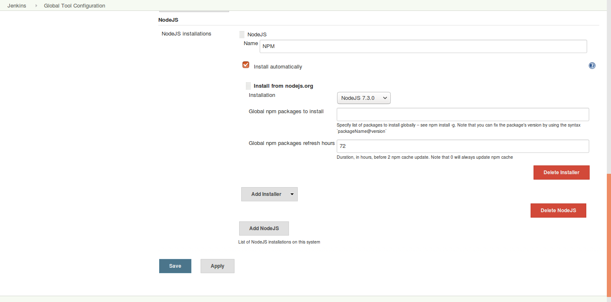

Create an Angular 2 frontend
Install NodeJS and NPM
We're going to use NPM as our package manager. To install NodeJS and NPM execute the following command:
curl -sL https://deb.nodesource.com/setup_7.x | sudo -E bash -
sudo apt-get install -y nodejs
Setup the Angular 2 project
We are using a bootstrap project to get started with Angular 2:
git clone --depth 1 https://github.com/angularclass/angular2-webpack-starter.git
cd angular2-webpack-starter
npm install
npm run server:dev:hmr
Now you can open the frontend on this url:
http://localhost:3000
Create a Docker image
If there isn't already a Dockerfile in the mail folder, create one with
the following settings:
FROM nginx:latest
MAINTAINER Robert Brem <brem_robert@hotmail.com>
ADD dist/ /usr/share/nginx/html
Like the jax-rs service the Angular2 service needs a build.js script
to create and push the Docker image in the repository.
#!/usr/bin/jjs -fv
var version = $ENV.VERSION;
var username = $ENV.REGISTRY_USERNAME;
var password = $ENV.REGISTRY_PASSWORD;
var email = $ENV.REGISTRY_EMAIL;
var registry = "disruptor.ninja:30500";
var imageName = registry + "/robertbrem/battleapp-frontend:" + version;
var build = "docker build -t " + imageName + " .";
execute(build);
var dockerLogin = "docker login --username=" + username + " --password=" + password + " --email=" + email + " " + registry;
execute(dockerLogin);
var push = "docker push " + imageName;
execute(push);
function execute(command) {
$EXEC(command);
print($OUT);
print($ERR);
}
Create the Jenkins pipeline
First of all we've to install NodeJS and NPM on Jenkins.
On Jenkins go to Manage Jenkins Manage Plugins. Change to the
Available tab and search for the NodeJS Plugin and install it.
After the restart go to Manage Jenkins Global Tool Configuration.
Under the title NodeJS we make the following settings:

This installs NodeJS and NPM and we can use it in our pipeline.
The Angular2 sample project also allows us to statically analyze our code and
compares it with the official Angular2 style guide. We can include this
analysis in our pipeline with the Checkstyle plugin. Just search under
Avaialble plugins for Checkstyle Plug-in and install it.
withEnv([ "VERSION=1.0.${currentBuild.number}",
"KUBECTL=kubectl",
"REGISTRY_EMAIL=brem_robert@hotmail.com"]) {
stage "checkout, build, test and publish"
node {
git url: "http://disruptor.ninja:30130/rob/battleapp-frontend"
def npmHome = tool 'NPM'
env.PATH = "${npmHome}/bin:${env.PATH}"
sh "npm install"
sh "npm run test"
sh "npm run lint"
sh "npm run build:prod"
sh "./build.js"
step([$class: 'JUnitResultArchiver', testResults: '**TESTS-*.xml'])
step([$class: 'hudson.plugins.checkstyle.CheckStylePublisher', pattern: '**REPORTS-*.xml'])
}
That the Karma tests can be executed on the server we've to change the
Karma settings from using Chrome to using PhantomJS. Therefore we've to change
the browser in karma.conf.js:
...
browsers: [
'PhantomJS'
],
...
PhantomJS is not per default installed therefore we've to install it:
npm install --save-dev karma-phantomjs-launcher
That Jenkins understands the test results we've to install the
karma-junit-reporter:
npm install karma-junit-reporter --save-dev
And tell Angular2 to create a report. This have to be done in the
karma.conf.js as well:
...
reporters: ['mocha', 'coverage', 'remap-coverage', 'junit'],
junitReporter: {
outputDir: '', // results will be saved as $outputDir/$browserName.xml
outputFile: undefined, // if included, results will be saved as $outputDir/$browserName/$outputFile
suite: '', // suite will become the package name attribute in xml testsuite element
useBrowserName: true, // add browser name to report and classes names
nameFormatter: undefined, // function (browser, result) to customize the name attribute in xml testcase element
classNameFormatter: undefined, // function (browser, result) to customize the classname attribute in xml testcase element
properties: {} // key value pair of properties to add to the <properties> section of the report
},
...
That Jenkins understands the static analysis we've to adapt the lint
npm script:
"lint": "tslint --format tslint-checkstyle-reporter -o REPORTS-tslint.xml --force \"src/**/*.ts\" && ./createCheckstyle.sh",
And install the tslint-checkstyle-reporter:
npm install tslint-checkstyle-reporter --save-dev
Additionally we've to create a script that adds the xml header and footer for
the Checkstyle plugin. This script is created in the root folder with the
name createCheckstyle.sh:
# /bin/bash
sed -i "1s/^/<?xml version='1.0' encoding='utf-8'?>\n<checkstyle version='5.7'>\n/" REPORTS-tslint.xml
echo "</checkstyle>" >> REPORTS-tslint.xml